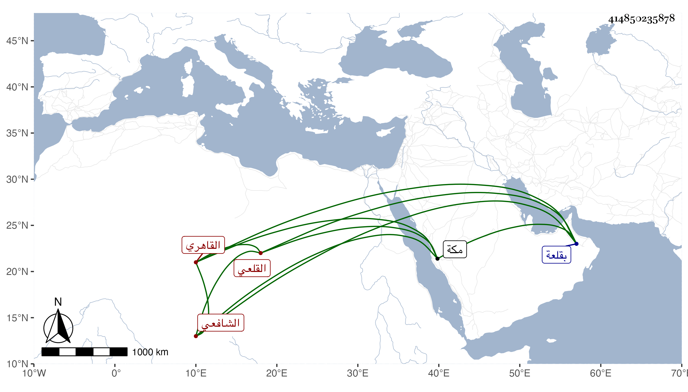

0902Sakhawi.DawLamic.ITO20230111-ara1.EIS1600.414850235878
Biography ID: 414850235878
890
إسماعيل بن إبراهيم بن حسن بن إبراهيم بن عمر المجد القلعي القاهري الشافعي ، ولد في شعبان سنة ثلاث عشرة وثماني مائة بقلعة الجبل ونشأ بها فقرأ على النور علي ابن أحمد الكردي الرفاعي ثم جوده بمكة على الشيخ علي الديروطي وقرأ على القاياتي ربع العبادات من المنهاج وعلى ابن المجدي كشف الحقائق في حساب الدرج والدقائق من تصنيفه مع عدة رسائل وأخذ الفن من قبله عن الكوم الريشي وأدام الاشتغال في التقويم والأحكام حتى برع في ذلك ثم ترك التقويم بإشارة التقي المقرزي أحد المهرة فيه وأكثر من التردد للتقي المذكور حتى قرأ عليه علوم الحديث لابن الصلاح ولم ينفك عنه حتى مات وسمع من لفظ شيخنا في الإملاء حديثا واحدا وكذا سمع على ابن بردس وابن ناظر الصاحبة والزين الزركشي وبمكة على أبي الفتح المراغي وغيره وأكثر بأخرة عن بقايا من الشيوخ لإسماع أولاده ومن ملازمة مجلسي في الإملاء وغيره وكتبها عني وحج غير مرة وجاور سنة وكان خيرا متوددا سخيا حسن العشرة تام العقل كثير الأدب مائلا للفقراء والغرباء كتبت عنه من نظمه فيمن اسمها ألف
| على وصالي عاذليمن جهل لام ألف | وجاءني يعذلني قلت له لام ألف |
وكتبت عنه غير ذلك مما أوردته في معجمي مات في شعبان سنة أربع وتسعين رحمه الله .
